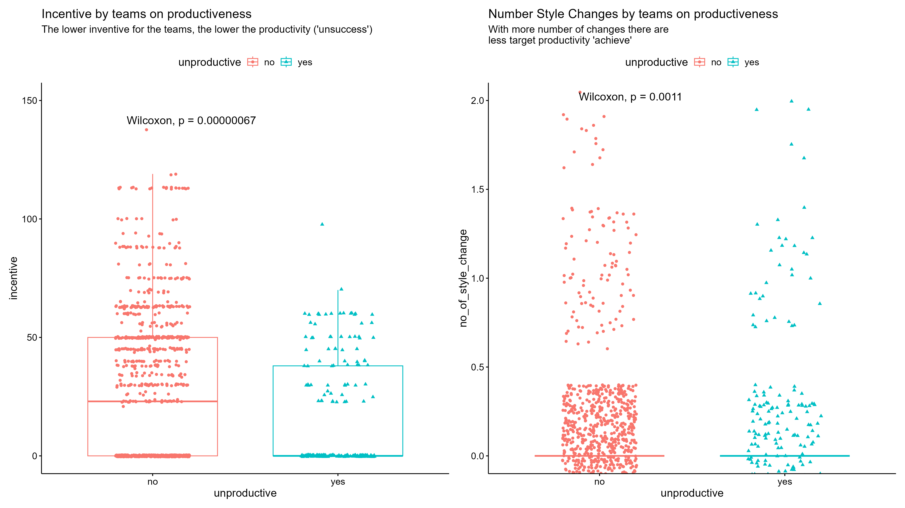
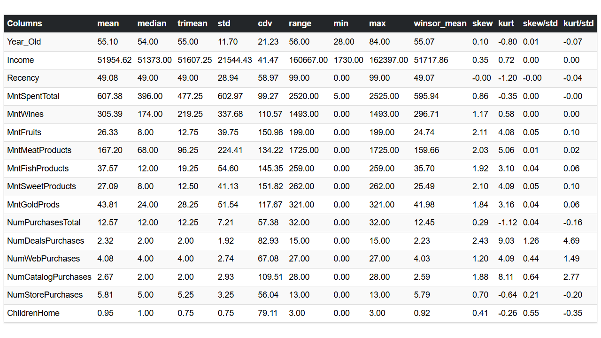
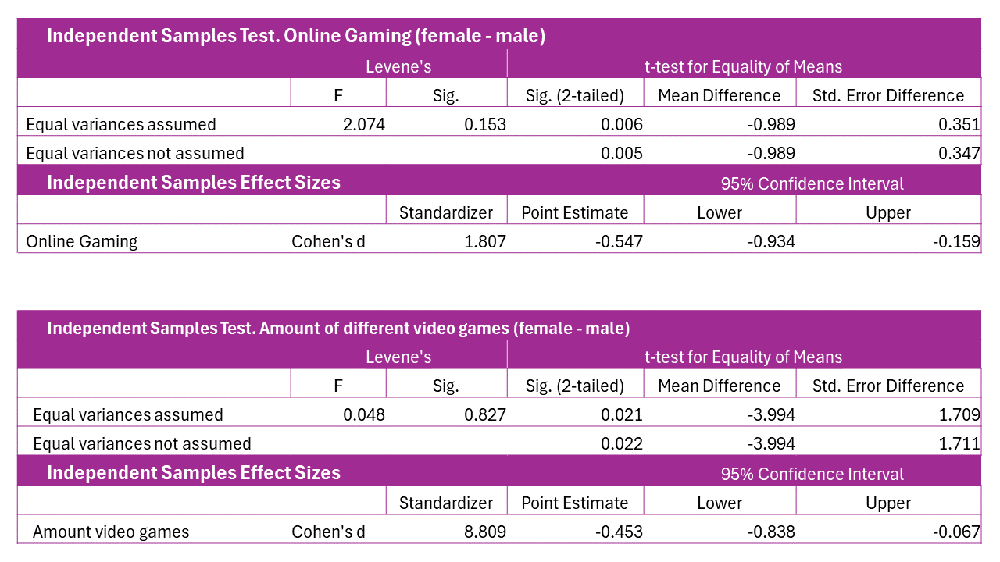

Alvaro Manzanas’ Porfolio
About Me
Let me introduce myself, my name is Álvaro Manzanas, I am a IT Systems Administrator and a Data Analyst person. Eager to learn and improve professionally in the world of data analysis, with curiosity and interest to know the knowledge they hide. I am characterized as an analytical person with logical thinking, as well as being creative and curious, which combines well with the organization and meticulousness with which I excel.
I hope you’ll take a look at what I’ve been working on, you might find it interesting. And if you like to connect with me, do not hesitate to do so, here I provide some buttons where you will find how to do it.
Data Science Projects
Actively working on personal projects related to Data Analysis and visualization that I will publish when they have a consistent basis. In the meantime below is the preview of some projects for those who are curious about what I have been doing.
Productivity Prediction
Project developed in R. It is oriented to productivity prediction, with the possibility of classifying whether or not the target productivity is met, or directly predicting what productivity value is expected.
It involves data cleaning, data exploration, statistical analysis, and predictive modeling.
With this project we want to understand why there are teams with lower performance that fail to meet the target productivity, and also want to be able to predict the productivity that the work teams may have.
Overview

Decision tree generated by the Regression Tree algorithm. It explains in a visual way the decisions that must be made to achieve high productivity. The most direct branch indicates that, when ‘targeted_productivity’ is ‘0.75’ or ‘0.80’ and ‘incentive’ is greater than 70, the predicted productivity would be 0.913 (1 being the maximum).
ROC curve plot with the AUC parameter at the bottom. It indicates how well the Random Forest classification model differentiates the categories. The larger the area under the curve with a maximum of 1, the better the predictions.

Two statistically significant Wilcoxon comparisons can be seen. The visualization is in ggplot2 with the extension ggpubr. It shows how the work teams that are less compliant with productivity have a statistically lower incentive and the number of changes in their production process is statistically higher than the work teams that do meet the target productivity.
| Random Forest | MC-RF | Logistic Regression | SVM | |
|---|---|---|---|---|
| Accuracy | 0.803 | 0.798 | 0.741 | 0.735 |
| Recall | 0.902 | 0.902 | 0.887 | 0.971 |
| Precision | 0.839 | 0.834 | 0.789 | 0.743 |
| Kappa | 0.47 | 0.455 | 0.237 | 0.106 |
| Detection Rate | 0.655 | 0.655 | 0.657 | 0.706 |
| AUC | 0.816 | 0.832 | 0.672 |
| R^2 | RMSE | MSE | MAE | |
|---|---|---|---|---|
| Stepwise * | 0.300 | |||
| LR Multiple * | 0.247 | 0.150 | 0.0226 | 0.1088 |
| Robust LR | 0.213 | 0.1499 | 0.02247 | 0.1066 |
| RF Regression | 0.4193 | 0.1288 | 0.01658 | 0.08681 |
| Regression Tree | 0.4403 | 0.1369 | 0.01875 | 0.09652 |
| Cubist Tree * | 0.3902 | 0.132 | 0.01741 | 0.08411 |
Campaign Acceptance Prediction (iFood)
This project focuses on a company in the food retail sector that aims to maximize their next marketing campaign and to do so, they are handing over their pilot study data. This will involve cleaning the data, analyzing it and proposing an approach to the marketing team to achieve this improvement for the next campaign. The second part focuses on getting a model that predicts customer behavior and thus selecting the most suitable customers for the next campaign.
Overview

Table showing descriptive statistics for each selected quantitative variable. Several of these statistics have been calculated with custom functions such as ‘Winsorised Mean’, ‘Coefficient of Variation Centered on the Mean’ or ‘Trimmed Mean’.

This graph, composed of six vertical bar charts with confidence interval, shows the mean values of amount of money spent by product type for the Marital Status categories.
The visualization represents a heat map with the correlations between the selected quantitative variables in order to observe the relationships between these variables and to guide further analysis.

The learning curve shows how the error decreases as we increase the size of the training set. It also helps us to identify whether our model is under-fitting or over-fitting the data. It is a useful tool for evaluating the performance of a model.

This bar chart represents the importance of the features for the first decision tree in the Random Forest prediction model. It provides information about the relative importance of each feature (or variable) in the decision tree, useful for understanding which features most influence the model’s predictions.
Data Analyst Journey
In this GitHub repository I progressively update my learning progress as a Data Analyst. I take care to maintain a scientific basis for the whole process, be it data cleaning, descriptive, inferential and predictive analysis. To learn the basics of different tools and languages, I have used, among others, the following books:
- Santos, G. R. (2023). Data Wrangling with R: Load, Explore, Transform and Visualize Data for Modeling with Tidyverse Libraries. Packt Publishing.
- Buttrey, S. E., & Whitaker, L. R. (2017). A Data Scientist’s Guide to Acquiring, Cleaning, and Managing Data in R. John Wiley & Sons.
- Matthes, E. (2023). Python Crash Course, 3rd Edition. No Starch Press.
- McKinney, W. (2022). Python for Data Analysis: Data Wrangling with Pandas, NumPy, and Jupyter. O’Reilly Media.
- Arnold, J. (2023). Learning Microsoft Power Bi: Transforming Data Into Insights. O’Reilly Media.
Below I highlight some image with a small description so you can get the idea, but I encourage you to explore the repository, there is all the content I have gone through. By the way, my personal notes for R are in ‘Annotations’.
Overview

The image shows a dashboard developed with Power BI in which you can see different graphs and data on how students are distributed throughout a course. From the number of students in the classroom, to a map showing the average scores depending on the state of residence in the USA.
This is also a Power BI dashboard in which the same data has been used, but this time it focuses on the grades obtained by the students. We can see what kind of test they had, how they describe their own level in Excel, as well as the average grade and what grade it corresponds to.
Final Degree Project
Development of a scale to measure the use of video games as coping strategies for the user. Descriptive statistics and their graphical representation, psychometric tests, as well as Structural Equation Modelling (SEM) and Factor Analysis among other tests were used.
Overview
It can be seen in the graphs how the sample of participants is distributed in the test scores for both depression and anxiety. A histogram can be seen as well as a stem-and-leaf chart which gives extra information such as mean, median, mode and range of scores.

The table shows the test of two hypotheses comparing two groups. The first one refers to online gaming and who has a preference for it. The second one refers to the amount and variety of games they play. In addition to the contrast, the effect sizes for both are shown.

The graph shows the different factors for the CFA as well as their standardised factorial values, with those closest to 1 and -1 being the most relevant. In the table you can find the model fit data.
| Chi-square | RMSEA | TLI | CFI |
|---|---|---|---|
| 0.154 | 0.03 | 0.963 | 0.968 |
- Chi-square: adequate > 0.05
- RMSEA: adequate < 0.04 and good between 0.05 - 0.08
- TLI: adequate > 0.94
- CFI: adequate < 0.94